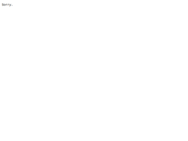
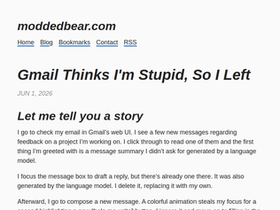
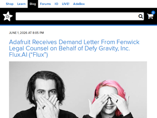
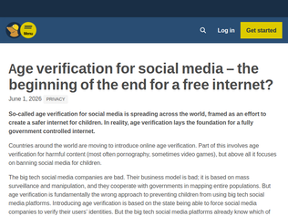
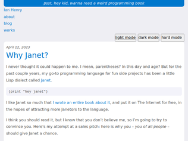
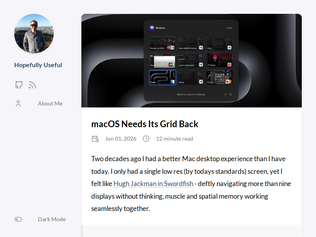
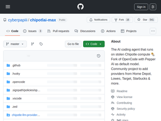

"My email is filled with junk from cybersecurity "experts" telling me that my open source project is "very compromised" and that they will gladly reveal to me what the issue is, if I commit to paying them a bug bounty. I get at least a few every week. I hate them, but I feel like we are well past the point where in any place where there is money to be made, the majority of cold outreach will be from semi-personalized AI agents. You just have to accept that most of the time your get contacted by someone, it is likely not a human."
"As a general rule, if someone ever posts any kind of career troubles on any platform, the only correct responses should contain sympathy or a relevant career opportunity. Anything else is so callous.Hang in there Ilia, you're not the only one hurting, and don't apologize for venting. Most of us in the HN community are far more supportive."
"I got one of those too, from "Alya", which seems to be an LLM-based tool the creator describes as his daughter.Beyond the usual rudeness of spam, that's a little creepy."

"Looking for your alternative?Let me give you some (non financially motivated) praise for Fastmail.It has everything Gmail has - even app passwords, hide my email, and ios integration. The only criticism is the calendar doesn’t autocomplete addresses so that’s a bit more typing than I would like. But everything you do in Fastmail is instant. They live up to the name!Once you try it and go back, you’ll be shocked - Gmail makes you stare at its logo for multiple seconds while it shrugs and eventually loads.. then takes over the top of your inbox with “try our new AI features!” which never remembers that you dismissed it 50 times in a row. Everything in gmail is SO slow, while Fastmail doesn’t even bother with animations. No animations will confuse you until you settle in and realise that yes, things can be nice.Fastmail data migration brought across my 22 years of emails over the course of about 30 hours with zero help from me. Search on Fastmail finds everything - even back to when you could only get Gmail with a friend code. There’s nothing left on the other side, it’s all here with me.Going back to my brand new startup inbox (G Suite) gives me the same feelings I get wandering a castle ruin."
"Exactly the same problem manifests itself in Google Docs.Hit RETURN. New paragraph. Begin considering what you will write. Prompt pops up: “Help me write.” Every time.It’s incredibly distracting and turning it off is hard wired into disabling about 1000 other features."
"I can appreciate LLMs for some use cases, but writing emails for the user is the one that really baffles me.It's one thing if you don't speak English well and could use some help making yourself understood, but the amount of native speakers using this is so strange to me. How does this help you? If you can write to the LLM telling it what kind of email to write, you might as well just write the email."
"For SpaceX (and possible the others):Yes it can, since they changed the rules to force over $30 trillion in passive 401k and retirement money to buy SpaceX at IPO valuations.From https://x.com/Hedgeye/status/2060435253928604065:"Rule changes for the SpaceX $SPCX IPO:Index providers waived the profitability requirement and cut the seasoning window from 90 days to 5.This forces over $30 trillion in passive 401k and retirement money to buy SpaceX at IPO valuations.Bloomberg Intelligence estimates S&P 500 funds must absorb 19% of SpaceX's float within 6 months.Russell 1000 and Nasdaq 100 funds will absorb 24%.The rules built to protect passive investors:1. S&P 500 has required 12 months of trading and 4 quarters of GAAP profitability since 2002. Both waived.2. Nasdaq cut its inclusion window from 90 trading days to 15.3. FTSE Russell cut its to 5.All three benchmarks are now structured to buy SpaceX at IPO pricing.""
"All these things are apparently valued at trillions of dollars these days. Where's the trillions, or hundreds of billions worth in improved quality of life? What has gotten better other than the ability to produce more crap?"
"Anthropic at $1t for an IPO vs Google at $23b in 2004 sounds insane but Google's revenue at the time was $2.7b while Anthropic's already at $47b, so a valuation at about 20x vs 10x revenue. Anthropic also has very high revenue growth (50x since 2024), it doesn't seems quite as insane as it could be."

"hi everyone, its me 'ladyada. we're very much looking forward to telling our story, i have reached out to the founder of flux.ai (Matthias Wagner - Founder & CEO at Flux), in hopes we can resolve this together and set a good example for the community. looking forward to maybe seeing this resolved on a podcast together, or something"
"Adafruit probably did a review of AI PCB tools. I've used Flux.ai before; it was a pretty bad experience. After about 50-100$ in tokens a couple of times, I couldn't get more than a couple of simple components on the schematic. And not in sensible positions.The product just grinds tokens for little return, in my opinion. I had far better luck wiring together KiCad MCP, SKIDL. There are some AI-driven autorouters out there now. Placement is probably the big issue that needs to be solved now. I could only get about 80% of what I wanted together with my hacky workflow."
"As an electrical engineer who has tried to use it multiple times, I think Flux is an absolutely awful product. No surprise at all that they want to sweep details about their “intellectual property, commercial traction and user base” under the rug."

"Back to the internet's peer-to-peer roots. Many protocols besides the wwwThe www became infested with so-called "tech" companies acting as intermediaries (middlemen)Lots of folks making money from surveillance ad system on the www. Oversized, unmanageable websites calling themselves "platforms"The www is an ad network. Not a great place for non-commercial activityFortunately, the internet is more than the www. The internet was not created to collect behavioral data and deliver advertising as its primary purposePeople pay for an internet subscription, not a www subscription (or now a "social media subscription")"
"It's absolutely a slippery slope - but most parents know how this is a very real thing as well. There's no controversy in having drugs, guns, alcohol, porn and other things 'behind the counter' - the intellectual debate over freedom of information is clouded by ideology.Definitely the 'slippery slope' debate is worth having, but that's way more relevant than the 'should 10-year-olds be able to do whatever' (aka all or nothing internet) which I think, if we took a vote, most people would be fine with nominal age restrictions, on that basis and on that basis alone aka outside the 'scary government' issue, which is again, real and material but nevertheless a separate concept however pragmatically engulfed these things are."
"There isn't much left of the free Internet anyway. Search engines no longer work, all discussion forums are ranked/censored by interest groups, mail delivery is between large entities.Maybe we need an alternative set of root servers for a free Internet."

"I have my qualms with Janet. Mostly, it's lack of package management versioning and lack of libraries in general (advanced HTTP routing, etc).I do LOVE that Janet can create binaries with JPM, scripts, and is very portable. I once put the Janet programming language on the Playdate game console as POC.I actually do enjoy writing Janet, but every time I do people think I created the language (I did not)."
"There is also fennel, earlier language originally by same developer, that is similar, but compiles to, and is fully implemented in, Lua. No standard library of its own so missing many nice things like the parser library from janet, but it is good for writing scripts for things that embed Lua.https://fennel-lang.org/"
"The author made these using Janet (discussed on HN in the past):https://bauble.studiohttps://toodle.studioThose two fascinating art tools got me very excited about Janet a while back."
"Huh, according to that model card this is a 137B total parameter model.Performance doesn't seem that good:- MAI-Code-1-Flash (137B-A5B) = 51% on SWE-bench pro- Qwen3.6-35B-A3B = 49.5% on SWE-bench pro (https://huggingface.co/Qwen/Qwen3.6-35B-A3B)They benchmark against Claude Haiku but Haiku is not good, it's worse than tiny open models you can run locally or via API at 10% the cost."
"It's a start and I welcome competition but I don't think I ever used small cloud models like Haiku 4.5. They are cute but for serious coding they tend to waste your expensive time.And this certainly wont bring me back to GitHub Copilot which I cancelled yesterday.GitHub Copilot had competitive pricing until yesterday when they changed from per-request to one of the most expensive per-token quotas. Seriously, take a look at their burning subreddit for some laughs: https://www.reddit.com/r/GithubCopilotI have since changed to DeekSeek Flash on high which is Sonnet+ level for almost free.If I feel I still need smarter models I might signup for $20/mo Codex to use GPT 5.5 which, in my opinion, is the best I can access right now."
"Does anyone actually uses these smaller models for coding? If so, how? I usually Opus everything. Is the play to plan/design/architect with a heavier model than delegate structured tasks to these smaller ones? Would appreciate to hear someone's opinion on having done and tested both paths."
"I think this is just the new normal.My car was stolen in Seattle and it was found with the person driving it when he was pulled over by police. In the car he had paperwork with his name on it, a weapon, and his work uniform in the trunk with a name badge (he was a security guard - lol) along with a neighborhood witness.Despite a mountain of evidence, the prosecutors declined to press charges because without direct video evidence of him stealing the car, they would not get a jury to convict, because jurors in Seattle have become accustom to thinking that the only way to overcome reasonable doubt is to have it on video. And even that often isn't enough..."
"I wonder what they mean by this?> The camera can have different ways of seeing encoded in it, including kinds of gazes that enforce social agreements about what kinds of behavior and people are considered “normal”The phrase "kinds of gazes" strikes me as the sort of thing that's only going to make sense to people trained in a very particular and idiosyncratic flavor of ethical critique. What a normal person sees here is, "These cameras can detect if people are acting bizarre and dangerous," which is probably something most people would appreciate. In Seattle, the problem, of course, is that the streets are full of people acting bizarre and dangerous, it doesn't take a camera network to find them, and the police seem to be under strict orders not to do anything about it."
"America needs to realize that this is absolutely not the land of the free anymore. The government and big business are in cahoots to screw you out of every cent they can and to make sure you're not about to commit some unspeakable act of terror, like hold up the wrong protest sign.Edit: case in point by https://www.techradar.com/pro/quote-of-the-day-by-oracle-co-..."

"> If they approve, the settings open, then the user has to find the specific little toggle and enable it. Another security prompt then done. Why isn’t this at most 2 prompts?Answer: Because modern-day Apple has subscribed to a particular brand of mitigation for the "noobs will always click 'Allow' especially if you ask them to first" problem. The mitigation is that Apple just dumps you on step 2 of a little 4-5 step mini sysadmin adventure where you prove, every time, that you're sophisticated enough to deserve an exception to the padded-cell walled garden mode they've sealed off 'for your safety.'As a complete nerd, you'd think maybe I'd like that I can prove my skills like this, but it comes off as deeply disrespectful to me as the user that I can't disable this.What's my solution to prevent grandma or a 10-year-old from clicking "Allow full filesystem access and keylogging" to an executable she downloaded from facebook-security-center-and-password-verification-cgi-bin-ab383 dot xyz? IDK, that's their problem, but they should offer a way for those of us who aren't clueless to turn whatever it is off."
"Prior to MacOS 10.11, Mission Control was good: you would swipe up with four fingers and it would show you a preview of all of your spaces. Then in 10.11, for no discernable reason, they changed it to suck: rather than showing you a preview, the bar just says "Desktop 1", "Desktop 2", etc until you mouse over it; the practical effect is that using spaces is disorienting and requires memorization.Some third-party software pretends to restore this functionality, but they do it by repositioning the mouse to simulate a hover, which introduces a delay and doesn't integrate correctly with the animation. Someone wrote a patch that works by disabling SIP and injecting code (https://github.com/briankendall/forceFullDesktopBar), but eventually stopped maintaining it.A decade later, I doubt anyone at Apple remembers that this bit of user interface used to be good."
"Yes, and I'd go a step further: OSes in general need a concept of a 'project' or 'task' or whatever, which a) cuts across apps and b) integrates deeply with windowing and spaces.Multitasking and context switching has been increasing for years, instant messaging boosted them again, and agent-based workflows are only going to push further in that direction. The OS needs to support that, and it's not an app-level concern: I use the same apps in each of my tasks.IDEs can help with this of course: they tend to have workspace/project primitives and can restore code and terminal contexts from those. But there's always a bunch of other connected stuff that can't be linked: web pages (some IDEs are starting to manage those too), agents which don't reside in the IDE, relevant chats with colleagues, project management apps and so on.This is clearly an OS-level concern, not an app-level concern.Some of the iPad experiments with alternative window organisation looked kind of promising, but they’re just not powerful or intuitive enough IMO."

"There was a really great, really underrated show on Peacock a few years ago called Mrs. Davis. The titular Mrs. Davis was an all-encompassing AI assistant that had taken over all of the governments of the world. Everyone wore a Whispering Earring-style earbud with a voice that guided them through their lives and made every decision for them. (Betty Gilpin plays a nun who's simultaneously rebelling against the AI and searching for the Holy Grail on its behalf.)In the show the AI had originally started as (spoiler, but not really) the customer support bot for Buffalo Wild Wings. I don't know what to do with this."
"NAL but I'd be worried about treading into CFAA territory with things like this. In the US, the law allows draconian penalties if you find yourself on the wrong side.Something like yt-dlp is just downloading public data, which I can see being defensible as automating the use of a service.But this commandeers remote machine resources to do your compute in ways clearly not intended by the provider. I don't know how ethical it is, but I definitely wouldn't want to argue this isn't "hacking" (the bad kind) in criminal court."
"I always thought that stuffing too much into an LLM context window was a lot like overloading a burrito.Keep cramming stuff in and eventually the tortilla gives out, and everything you added since quietly spills out the bottom.Anyway, this agent probably has the structural integrity of a fat burito held from one corner :)"
Please don't spam people looking for employment. It's just cruel
"My email is filled with junk from cybersecurity "experts" telling me that my open source project is "very compromised" and that they will gladly reveal to me what the issue is, if I commit to paying them a bug bounty. I get at least a few every week. I hate them, but I feel like we are well past the point where in any place where there is money to be made, the majority of cold outreach will be from semi-personalized AI agents. You just have to accept that most of the time your get contacted by someone, it is likely not a human."
"As a general rule, if someone ever posts any kind of career troubles on any platform, the only correct responses should contain sympathy or a relevant career opportunity. Anything else is so callous.Hang in there Ilia, you're not the only one hurting, and don't apologize for venting. Most of us in the HN community are far more supportive."
"I got one of those too, from "Alya", which seems to be an LLM-based tool the creator describes as his daughter.Beyond the usual rudeness of spam, that's a little creepy."